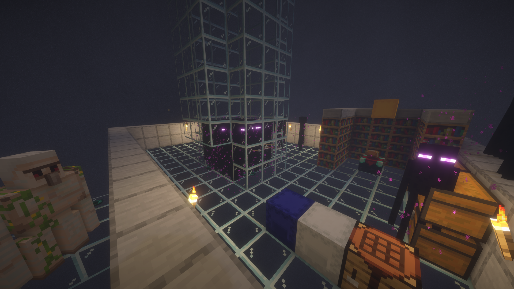
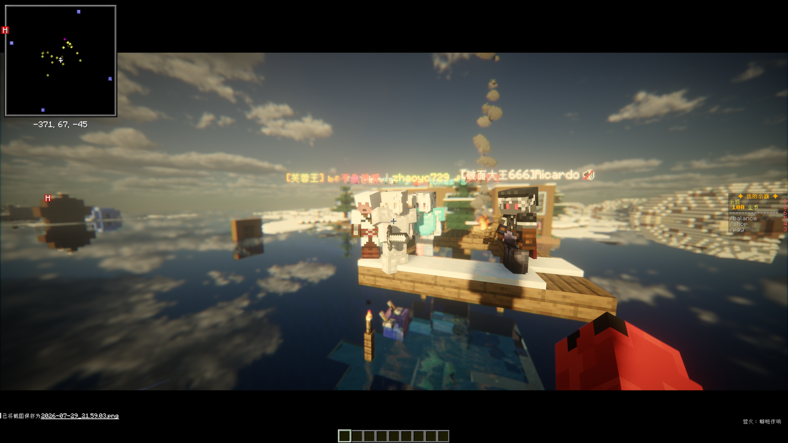
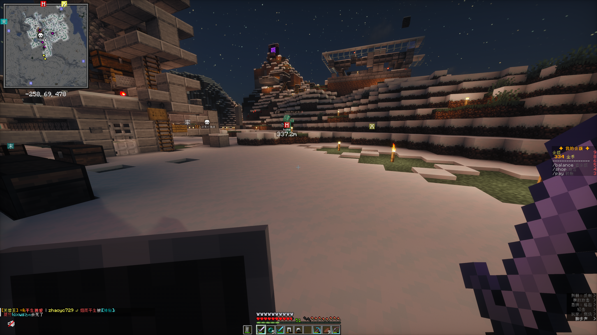
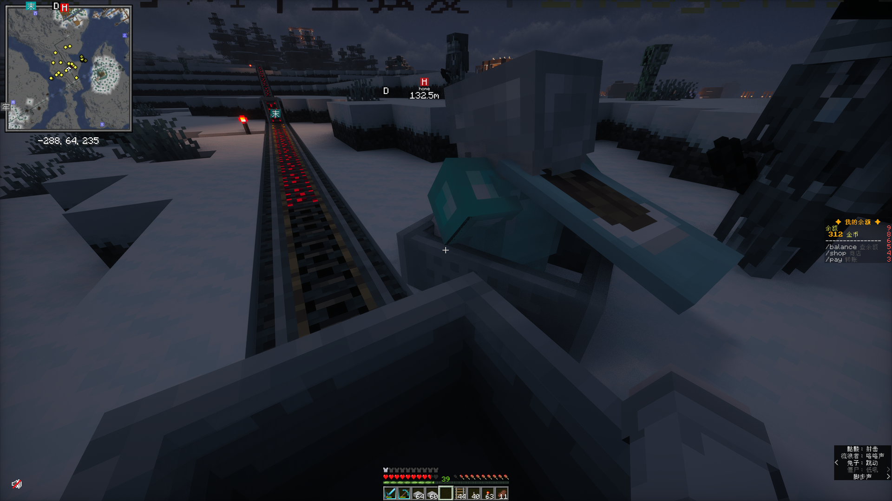

BLUE SHARK
熟人小服 · 轻松生存 · 红石与生活
一条开了两年的 Java 1.20.x 轻模组生存服务器， 通过皎月连内网穿透把三五好友聚在同一片自然地形世界里—— 盖房子、造机器、聊聊天，偶尔打打 PvP。不对外开放招募，纯粹记录这片小海。
▼
熟人小服 · 轻松生存 · 红石与生活
一条开了两年的 Java 1.20.x 轻模组生存服务器， 通过皎月连内网穿透把三五好友聚在同一片自然地形世界里—— 盖房子、造机器、聊聊天，偶尔打打 PvP。不对外开放招募，纯粹记录这片小海。
开服两年，始终是一条小小的、认真的生存之船
Blue Shark 诞生于两年前的一个想法：不要花哨的氪金、不要复杂的框架， 就几个朋友在 Minecraft 原版自然地形里安安静静地玩下去。
我们用的服务端是 Mohist——同时支持 Bukkit 插件与 Forge 模组， 在这个基础上装了 10~30 个轻量模组。不追求华丽大改， 只让生存多一些方便、多一些乐趣，玩法依然是熟悉的味道。
服务器常驻 3~5 人，靠 皎月连内网穿透在朋友们之间相连， 不公开招募、不对外开放——它是一片只属于这个小圈子的海。
「熟人小服 · 轻松生存」
一句话定位 —— 不折腾，玩得开心就好。点击任意卡片，跳转到对应的独立页面
出生点、主城与各基地的地标坐标，还有这片海的航拍视角。
OPEN ▸住在这片海里的常驻玩家——头衔、擅长什么，都写在自我介绍里。
OPEN ▸动态价格商店、/pay 玩家间转账，以及未来的独立市场。
OPEN ▸Mohist 双生态上跑的轻量模组和 Bukkit 插件清单。
OPEN ▸当前状态、版本与服务端速览——一片海的运行示意。
OPEN ▸经济与在线时长的排行，数据为示意展示。
OPEN ▸经济、传送与连接的已确认说明，其余内容待补充。
OPEN ▸站点由来、技术栈与制作者——这片海从哪来。
这片海还在生长，新的角落会陆续浮出水面。
轻松与硬核并存，自由是这里的主题
慢节奏生存：种田、养动物、盖小房子。节奏自己定，忙完了一天进来发发呆也很舒服。
休闲之外也认真玩红石：自动化农场、运输系统、联动装置，把效率拉满。
野外 PvP 完全开放。想切磋就来约战，打输了别气馁，大家都是熟人。
保持 Minecraft 原生地形生成，配上 10~30 个轻模组，熟悉的风景与惊喜并存。
死亡不掉落背包，冒险更从容。探索、摔死、被怪追，都可以优雅地重新出发。
不搞固定活动，兴致来了就约着一起建筑、一起挖矿、一起开荒，随性但认真。
一组静态信息卡片，一眼看清这片海
熟人服的规则很简单——少设卡，不伤感情
完全允许，不刻意设防。既然是熟人服，就大大方方地玩，把限制降到最低。
不禁止，但真心不建议。这些东西会让一起玩的朋友失去乐趣，也容易伤了和气。
玩归玩，闹归闹，别拿言语伤人心。这条是底线，谁都不例外。
这片海的随手记录




平时大家在 QQ 语音里唠嗑，偶尔也会用轻量语音模组，在游戏里边走边聊、身临其境。